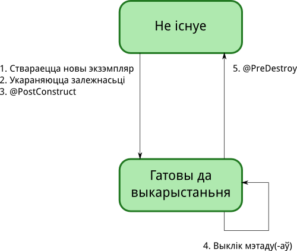

Essentials of the Java Programming Language, Part 1
Essentials of the Java Programming Language, Part 2
TutorialsPoint's Java Tutorials
JSE
Common Annotations
@Generated
Пазначае зыходны код, які быў згенераваны:
@ManagedBean
Выкарыстоўваецца для пазначэньня аб'ектаў, якія могуць кіравацца кантэйнэрам:
@PostConstruct і @PreDestroy
@PostConstruct выкарыстоўваецца для пазначэньня мэтаду, які будзе выкліканы пасьля ўсіх іньекцый, але перад тым, як бін будзе прадстаўлены кантэйнэрам для выкарыстаньня. А @PreDestroy выкарыстоўваецца для пазначэньня мэтаду, які будзе выкліканы непасрэдна перад тым, як кантэйнэр вынішчыць бін, для вызваленьня папярэдне занятых рэсурсаў. Мэтады, пазначаныя гэтымі анатацыямі, павінны вяртаць void, не кідаць checked выключэньняў, не быць статычнымі, а таксама не прымаць аргумэнтаў, за выключэньнем EJB-інтэрсэптэраў, калі яны прымаюць аргумэнт InvocationContext.
@Resource і @Resources
@Resource выкарыстоўваецца для пазначэньня спасылкі на рэсурс. Калі выкарыстоўваецца перад полем альбо сэттэрам, кантэйнэр зробіць іньекцыю адпаведнага значэньня ў час ініцыіраваньня праграмы. Калі выкарыстоўваецца перад клясам, гэта азначае, што праграма будзе "шукаць" значэньне ў часе сваёй працы.
Калі ж трэба пазначыць некалькі рэсурсаў, выкарыстоўваецца @Resources:
@DeclareRoles
Выкарыстоўваецца для аб'яўленьня роляў праграмы. (ня вельмі разумею сэнс)
@RolesAllowed
Выкарыстоўваецца для пазначэньня роляў, пад якімі дазваляецца выкананьне мэтадаў. Можа стаяць перад клясай і перад мэтадам. Калі ўжываецца перад клясай, ужываецца да ўсіх яе мэтадаў. Калі ўжываецца і перад клясай, і перад мэтадамі, тады анатацыя перад мэтадам перакрывае анатацыю перад клясай.
@PermitAll
Выкарыстоўваецца каб пазначыць, што выкананьне мэтадаў дазваляецца любым ролям. Можа стаяць перад клясай і перад мэтадам.
@DenyAll
Выкарыстоўваецца каб пазначыць, што выкананьне мэтадаў забараняецца незалежна ад ролі. Можа стаяць перад клясай і перад мэтадам.
@DataSourceDefinition і @DataSourceDefinitions
@DataSourceDefinition выкарыстоўваецца для аб'яўленьня DataSource кантэйнэра і для рэгістрацыі яго ў JNDI.
альбо:
Калі ж трэба аб'явіць некалькі DataSource, выкарыстоўваецца @DataSourceDefinitions:
JDBC
JNDI
JAXP
JAXB
StAX
JAAS
JMX
JAF
JEE
Screencasts: Adam Bien (у храналягічным парадку)
IntelliJ IDEA: JavaEE 7 Screencasts
Дэскрыптары разгортваньня
my-app
`-- src
`-- main
|-- java
| `...
|-- resources
| |
| `--META-INF
| |-- application.xml - JavaEE
| |-- application-client.xml - JavaEE
| |-- persistence.xml - JPA
| `-- ra.xml - JCA
`-- webapp
|
`--WEB-INF
|-- beans.xml - CDI
|-- ejb-jar.xml - EJB
|-- faces-config.xml - JSF
|-- validation.xml - Beans Validation
|-- web.xml - Servlet
|-- web-fragment.xml - Servlet
`-- webservices.xml - Web-services SOAP
beans.xml
faces-config.xml
persistence.xml
Кампанэнты і CDI
Жыцьцёвы цыкл кампанэнтаў
Вобласьці бачнасьці і кантэкст
Кампанэнты маюць стан і жывуць выключна ў межах пэўнай вобласьці бачнасьці: запыту, сэансу, дыялёгу і ўсёй праграмы.
@Named
Анатацыяй @Named пазначаюцца біны, да якіх павінны мець доступ вью па іх імёнах:
@Default і @Alternative
Пры дапамозе анатацыі @Default пазначаецца змоўчная кляса для іньекцыі, а анатацыяй @Alternative – альтэрнатыўная/-ыя.
@Qualifier, @Produces і @Inject
Пры дапамозе анатацыі @Qualifier можна ствараць анатацыі-маркеры для пазначэньня мэтадаў-вытворцаў (@Produces) а таксама палёў, якія запаўняюцца значэньнямі (@Inject), якія вяртаюцца тымі мэтадамі-вытворцамі:
Пры аб'яўленьні і іньекцыі, анатацыі-маркеры можна камбінаваць, то бок пазначаць некалькі для выбару паміж некалькіх варыянтаў.
Альбо для гэтых мэтаў можна ствараць анатацыі-маркеры с атрыбутамі (іх можа быць больш за 1):
Produces-мэтад можа ў якасьці аргумэнту прымаць InjectionPoint – доступ да асяродку іньекцыі:
@Any і выбар з альтэрнатываў
JavaServer Faces
JSF2: How to Create a Global Ajax Status Indicator
EJB
Enterprise JavaBeans 3.1 with Contexts and Dependency Injection: The Perfect Synergy
JPA
Bean Validation
JAX-RS
У ніжэй прыведзеным прыкладзе пры звароце да RESTful GET-рэсурсу адбудзецца аўтаматычнае канвэртацыя Java-аб'екту ў JSON-фармат пры дапамозе RESTEasy. Галоўнае, каб бін Member быў пазначаны JAXB-анатацыяй @XmlRootElement.
Security
Simple Java EE (JSF) Login Page with JBoss PicketLink Security
Is your web application secure? HTTP attacks are real, and dangerous
Concurrency
Зборка
Ant
Maven
Кніга «Better Builds With Maven»
Кніга «Maven: The Complete Reference»
Усталёўка
Перш за ўсё трэба каб на кампутары быў ужо ўсталяваны JDK.
Пасьля гэтага спампоўваем дыстрыбутыў і распакоўваем яго напрыклад сюды: /usr/local/apache-maven. Пры распакоўцы будзе створана тэчка з пазнакай вэрсіі, напрыклад: apache-maven-3.0.5.
Дадаем у асяродак зьменную M2_HOME:
Таксама дадаем шлях да bin-тэчкі мавена ў PATH
Пры неабходнасьці дадаем зьменную асяродка MAVEN_OPTS, якая вызначае ява-парамэтры, зь якімі будзе запускацца мавен:.
Усё, мавен усталяваны і гатовы для працы. Пераканацца ў гэтым можна так:
Наладкі
У агульным выпадку пасьля ўсталёўкі мавен цалкам гатовы для працы, але бываюць выпадкі, калі патрэбныя дадатковыя наладкі. Адным з такіх выпадкаў зьяўляецца наяўнасьць проксі-сэрвэра паміж працоўным кампутарам і інтэрнэтам.
Дадатковыя наладкі мавена зьмяшчаюцца ў файле settings.xml, які ў сваю чаргу можа зьмяшчацца ў двух розных месцах:
- Тэчка мавена:
$M2_HOME/conf/settings.xml - Тэчка карыстальніка:
${user.home}/.m2/settings.xml
Першы зь іх завецца файлам глябальнай канфігурацыі, другі – канфігурацыяй карыстальніка. Калі існуюць абодва гэтыя файлы, тады выніковая канфігурацыя складаецца ў выніку іх зьліцьця, пры гэтым канфігурацыя карыстальніка мае перавагу па-над глябальнай.
Прыклад наладкі проксі-сэрвэру:
Стварэньне праекту
Стварыць новы праект можна наступным чынам (цяперашняй тэчкай павінна быць тэчка, у якой будуць зьмяшчацца вашы праекты):
Гэтая каманда створыць тэчку my-app па значэньню парамэтра artifactId, а ў гэтай тэчцы наступную структуру:
my-app
|-- pom.xml
`-- src
|-- main
| `-- java
| `-- com
| `-- mycompany
| `-- app
| `-- App.java
`-- test
`-- java
`-- com
`-- mycompany
`-- app
`-- AppTest.java
Канвэнцыя па-над канфігурацыяй
Maven прытрымліваецца ідэалёгіі канвэнцыя па-над канфігурацыяй, якая азначае, што распрацоўшчыку ня трэба самому выдумляць нейкія базавыя рэчы, а Maven сам іх перадвызначае, напрыклад месцазнаходжаньне зыходнікаў, рэсурсаў, тэстаў, скампіляваных файлаў і jar-файлаў перадвызначана наступным чынам:
| Элемэнт | Перадвызначанае месцазнаходжаньне |
|---|---|
| Зыходныя файлы праекту | ${basedir}/src/main/java |
| Рэсурсы | ${basedir}/src/main/resources |
| Тэсты | ${basedir}/src/test |
| Скампіляваныя файлы | ${basedir}/target/classes |
| jar-файлы | ${basedir}/target |
POM
Дэталі праекту, залежнасьцямі і зборкай якога кіруе Maven, знаходзяцца ў файле pom.xml, які павінен знаходзіцца ў корані праекту. Яго тыпічны зьмест наступны:
Этапы
Запусьціць зборку праекта мавенам можна пры дапамозе кансольнай каманды mvn <ЭТАП> з месца, дзе знаходзіцца файл pom.xml (то бок знаходзячыся ў корані праекта). ЭТАП – гэта імя этапу жыцьцёвага цыкла зборкі праекта:
validate |
правярае карэктнасьць мэта-інфармацыі аб праекце |
compile |
кампіліруе зыходнікі |
test |
праганяе юніт-тэсты скампіляваных клясаў, якія атрымаліся на папярэднім этапе, выкарыстоўваючы падыходзячы тэставы фрэймворк |
package |
пакуе праект у лёгкаперамяшчаемы фармат (JAR альбо WAR) |
integration-test |
адпраўляе запакаваны праект у асяродак інтэграцыйнага тэставаньня і праганяе інтэграцыйныя тэсты |
verify |
правярае упакаваны праект на карэктнасьць і задавальненьне крытэрам якасьці |
install |
зьмяшчае пакет у лякальны рэпазыторый мавена, адкуль ён будзе даступны іншым праектам у якасьці залежнасьці |
deploy |
зьмяшчае пакет на сэрвэр для рэальнай працы |
Пры гэтым этапы асноўнага жыцьцёвага цыкла зборкі зьяўляюцца пасьлядоўнымі, і калі напрыклад запусьціць каманду mvn package, то будуць пасьлядоўна выкананы этапы validate, compile, test і напрыканцы сам package.
Акрамя гэтага у мавене ёсьць самастойныя этапы, якія існуюць па-за межамі звычайнага жыцьцёвага цыкла мавена і іх выкананьне не прыводзіць да аўтаматычнага выкананьня іншых этапаў, гэта:
clean |
выдаляе вытворныя артэфакты, якія былі створаныя мавенам раней |
site |
стварае дакумэнтацыю для праекта |
Профілі зборкі
Рэпазыторыі
Рэпазыторый мавена – гэта пляцоўка, дзе захоўваюцца джаркі праектаў, залежнасьці, плагіны і іншыя артэфакты, якія патрэбныя мавену для зборкі. Рэпазыторыі бываюць:
- лякальны – гэта тэчка на лякальным кампутары, па змоўчваньні
$HOME/.m2/repository, але можа быць перавызначана ўsettings.xml: - цэнтральны – знаходзіцца па адрасе http://repo1.maven.org/maven2/.
- адлеглыя – уласныя рэпазыторыі распрацоўшчыкаў. Гэтыя рэпазыторыі можна пазначаць непасрэдна ў
pom.xml:
Калі мавену ў працэсе зборкі спатрэбіўся нейкі артэфакт, ён:
- спачатку пашукае яго ў лякальным рэпазыторыі, калі ён там ёсьць, возьме яго адтуль, інакш пяройдзе на кроку 2;
- пашукае яго ў цэнтральным рэпазыторыі (патрэбны доступ у інтэрнэт), калі ён там ёсьць, загрузіць яго ў лякальны рэпазыторый і возьме адтуль, інакш пяройдзе да кроку 3;
- калі пазначаная крыніца адлеглага рэпазыторыю, пашукае там, калі артэфакт там ёсьць, загрузіць яго ў лякальны рэпазыторый і возьме адтуль, інакш, калі патрэбнага артэфакту няма і ў адлеглым рэпазыторыі, альбо калі адлеглыя рэпазыторыі ўвогуле не пазначаныя, тады мавен спыніць працу з пазнакай памылкі.
Рэдка, але бываюць сытуацыі, калі пэўнага артэфакту няма ні ў якім з вядомых рэпазыторыяў, але ён даступны для загрузкі. У гэтым выпадку можна яго загрузіць на лякальны кампутар і дадаць у лякальны рэпазыторый наступнай камандай:
Напрыклад, jdbc-драйвэр для работы з СКБД Oracle вэрсіі 10.2.0.1, можна зарэгістраваць наступнай камандай:
Плагіны
Па сутнасьці сваёй мавен – гэта фрэймворк выкананьня плагінаў. І каб зьмяніць нешта ў працэсе зборкі, якую ён робіць, усё што трэба зрабіць – гэта дадаць нейкі плагін, альбо наладзіць ужо існуючы. Напрыклад, каб наладзіць ява-кампілятар такім чынам, каб былі дазволеныя зыходнікі вэсріі 5.0, трэба зрабіць наступнае:
Кожны плагін мае мэты (goals) – гэта пэўныя атамарныя апэрацыі, і ўсё, што робіць мавен (у межах этапаў зборкі), ён робіць выконваючы пэўныя мэты розных плагінаў. Калі нейкая мэта плагіну не злучана ні зь якім этапам зборкі, яе можна выканаць непасрэдна праз плагін, а не праз этап зборкі:
Jetty
Каб Jetty правяраў зьмяненьні ў праграме і аўтаматычна падгружаў іх, трэба зьмяніць змоўчнае значэньне парамэтру scanIntervalSeconds з 0 напрыклад на 1:
Для таго, каб аўтаматычная падгрузка працавала як чакаецца, Jetty абавязкова павінен запускацца праз каманду mvn jetty:run (ні ў якім разе не mvn jetty:run-exploded; апошняя будзе прыводзіць да таго, што праграма будзе стартаваць з сабранага war-файла, і адпаведна будзе губляцца ўвесь сэнс хуткага фідбэку на зьмяненьні).
Залежнасьці
У сэкцыі dependencies файла pom.xml пералічваюцца ўсе зьнешнія залежнасьці, якія патрэбныя для таго, каб праект змог быць сабраным:
Пры гэтым у элемэнце scope пазначаецца вобласьць (scope), для якой гэтая залежнасьць мае дачыненьне, а таксама ўплывае на classpath, які ўжываецца для розных задач мавена. Магчымыя вобласьці:
- compile – гэта змоўчная вобласьць, яна ўжываецца ў тым ліку тады, калі яўна не была пазначаная. Залежнасьці пазначаныя такім чынам, даступныя ўва ўсіх classpath праекту, і больш таго, даступныя ў залежных праектах.
- provided – падобна да compile, але чакаецца, што JDK, альбо кантэйнэр самі прадставяць залежнасьці ў runtime. Напрыклад, гэта тычыцца Servlet API, які павінен прадставіць вэб-кантэйнэр.
- runtime – пазначае, што залежнасьць патрэбная не для кампіляцыі, але для выкананьня праекту. Будзе даданая ў тэставы і runtime classpath.
- test – пазначае, што залежнасьць не патрэбная для зборкі і працы праграмы, але толькі для кампіляцыі і выкананьня тэстаў.
- system – падобна да provided, але адрозьніваецца тым, што шлях да jar-файлу залежнасьці павінен быць яўна пазначаны.
- import (maven 2.0.9+) – ужываецца толькі для залежнасьцяў з тыпам pom у сэкцыі
<dependencyManagement>
Common Annotations API
JavaEE CDI API
JavaServer Faces
Альбо больш vendor independent:
EJB
JPA API
Bean Validation
JAX-RS API
Testing
Лагіраваньне
Трэба дадаць залежнасьці ў pom.xml:
Дадаць наладкі Log4J у файл log4j.properties па шляху src/main/resources:
Тэставаньне
Unit-тэставаньне
The JMockit Testing Toolkit Tutorial
Функцыянальнае тэставаньне
Интеграционное тестирование в Java EE
UI-тэставаньне
Spring
Java Spring. Часть 1 — Введение
Java Spring. Часть 2 — Inversion of Control
Java Spring AOP. Часть 1 — Advice
JJava Spring AOP. Часть 2 — Pointcut, Advisor
Java Spring AOP. Часть 3 — AspectJ
Spring Framework Reference Documentation
Developing a Spring Framework MVC application step-by-step
Security
Boot
Патрабаваньні для вэрсіі 1.2.3.RELEASE:
- Java 7+
- Servlet 3.1+
- Spring Framework 4.1.5+
- Maven 3.2+
- Jetty 9+
Тыповая наладка ў pom.xml:
Усталёўка CLI
Спампоўваем архіў і распакоўваем яго ў адвольную тэчку, напрыклад у /opt/spring-boot.
Ладкуем асяродак, дадаўшы ў ~/.profile:
Таксама ствараем сім-лінк :
View templates
Thymeleaf
Базы даных
Hibernate
Java Hibernate. Часть 1 — Введение
Java Hibernate. Часть 2 — Запросы
Java Hibernate. Часть 3 — Отношения
Java Hibernate. Часть 4 — Spring
Міграцыі
Асінхроннае і маштабуемае
async-io: Atmosphere framework
akka.io: Build powerful concurrent and distributed applications more easily
Карысныя бібліятэкі
Guava: Google Core Libraries for Java
PrettyTime: intuitive Java date and timestamp formatting
HowTo's
Аналізатары кода
SonarQube
Змоўчны адміністратар: admin/admin.
Старт сэрвэра: sudo bash /opt/sonarqube-5.0.1/bin/linux-x86-32/sonar.sh start
Servers
Jetty
WildFly
Воблачны хостынг
Heroku
Learn More about Heroku for Java
Deploying Tomcat-based Java Web Applications with Webapp Runner